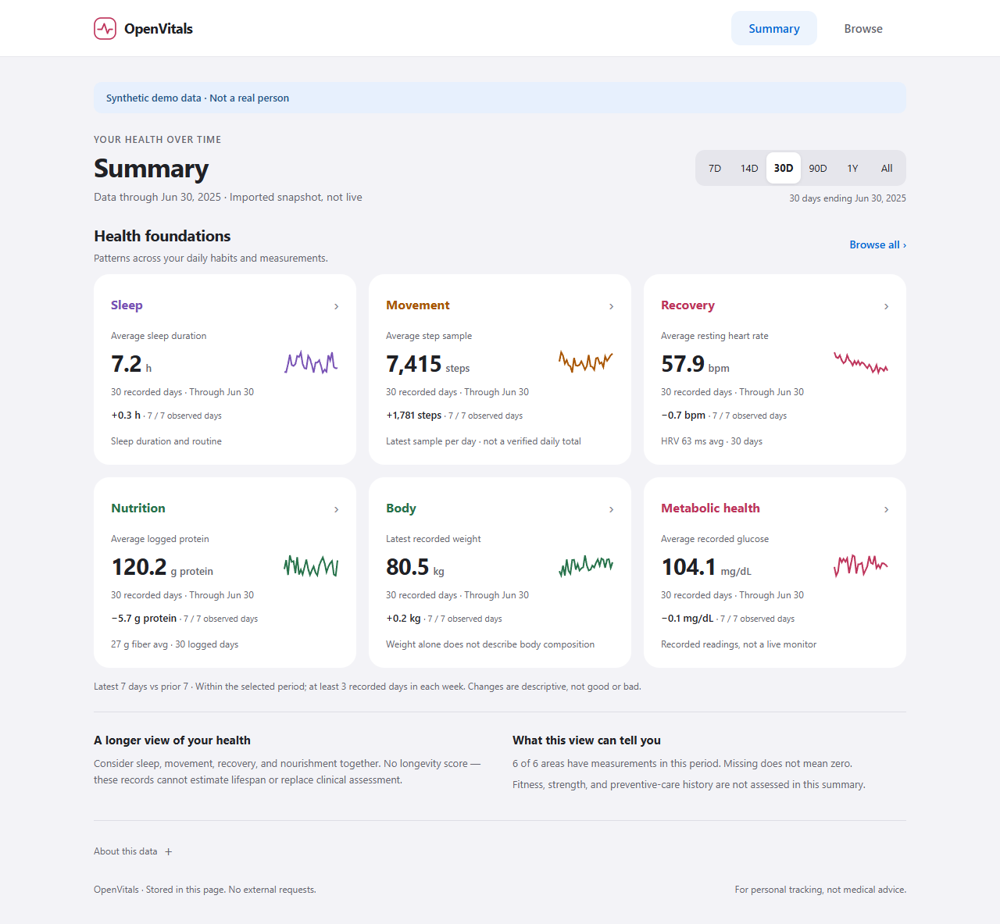

See the habits and measurements behind long-term health. OpenVitals brings sleep, movement, recovery, nutrition, and more into one local-first dashboard — your data, with context.

Most health dashboards lock your data in a vendor's cloud or show only one device. OpenVitals is built the opposite way.
Your data lives in a SQLite file you own. No accounts, no telemetry.
A small connector interface normalizes any source into one model.
The dashboard is one HTML file with zero external requests. Works offline.
Metrics, fasting window, glucose bands and insight profiles are all config.
Four stages, each with a clean contract — replace any part without touching the others.
apple_health, oura, yazio, dexcom, and a synthetic demo. Add your own in ~30 lines.
A local SQLite store for normalized observations, meals, sleep, workouts, and medication records.
Pure-Python stats (no SciPy): trends, correlation with p-values, glucose, fasting, meds.
A balanced healthspan overview, searchable measurements, and details on demand. Apple Health-inspired, self-contained, and offline.
Pluggable guidance layer. A diabetes + longevity sample ships as a configurable reference.
One binary for sample/ingest/build/analyze/serve, plus a Dockerfile for self-hosting.
Up and running in under a minute — with no private data. The sample config uses the synthetic connector.
# install pip install -e . # write a sample config (uses demo data) openvitals sample --output config.yaml # build the offline dashboard openvitals build --config config.yaml --output dashboard.html # …or run it live with auto-refresh openvitals serve --config config.yaml --port 8899
A linear pipeline with swappable parts at every stage.
Use the included source adapters, or build a connector for another export format.